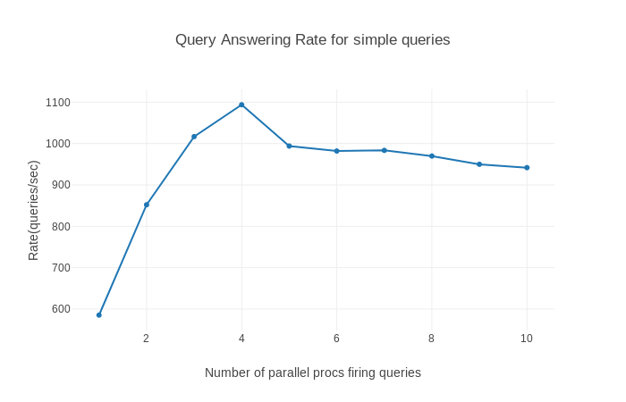
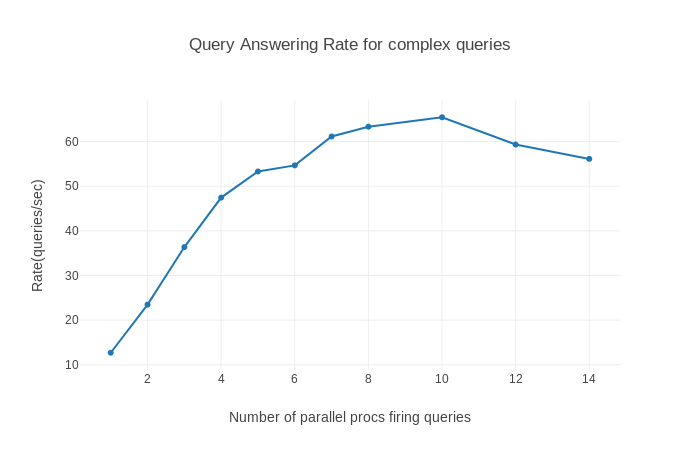

Benchmarking the query answering¶
Neo4j queries¶
We divide the number queries to be answered into two types. Simple neo4j queries and complex neo4j queries. We have these queries and a set list of hashtags and userIds present in the system. We generate a list of queries to be answered by randomly picking attribute to create the query. Thus creating a single query consists of these two steps:
- Pick a templated cypher query
- Randomly pick the values of inputs to the query from a static list to create the query.
Similarly, we create a list of queries. The templated cypher queries are put into the simple or complex basket by seeing the time taken to answer a single query.
Having obtained the queries, we spawn multiple threads each of which opens a connection to the neo4j database in form of a session. Pops a query from the queue and delegates it to be answered by the database. To observe the optimal number of connections to be opened to the database, we plot the query answering rate verses the number of parallel connections.
Simple Queries¶
The simple queries considered are these:
- Return count of distinct users who have used a hashtag
- Return count of ditinct users who follow a certain user
- Return the number of times a user was followed in a given interval
- Find the number of current followers of users who have used certain
- Find the count of users who tweeted in a given interval
The cypher code of these queries can also be seen here.
# Return count of distinct users who have used a hashtag
q1 = """match (u:USER)-[:TWEETED]->(t:TWEET)-[:HAS_HASHTAG]->(:HASHTAG{text:"{{h}}"})
with distinct u as u1 return count(u1)"""
# Return count of ditinct users who follow a certain user
q2 = """match (x:USER)-[:FOLLOWS]->(:USER {id:{{u1}}}), (x)-[:FOLLOWS]->(:USER {id:{{u2}}})
with distinct x as x1 return count(x1)"""
# Return the number of times a user was followed in a given interval
q3 = """
match (fe:FOLLOW_EVENT)-[:FE_FOLLOWED]->(u:USER {id:{{u}}})
where fe.timestamp > {{t1}} and fe.timestamp < {{t2}}
return count(fe)
"""
# Find the number of current followers of users who have used certain hahstag
q4 = """
match (x:USER {id:{{u}}})-[:TWEETED]->(:TWEET)-[:HAS_HASHTAG]->(h:HASHTAG), (f:USER)-[:FOLLOWS]->(x), (f)-[:TWEETED]->(:TWEET)-[:HAS_HASHTAG]->(h)
with distinct f as f1 return count(f1)
"""
# Find the count of users who tweeted in a given interval
q5 = """
match (te:TWEET_EVENT)-[:TE_TWEET]->(:TWEET)-[:RETWEET_OF]->(t:TWEET), (te)-[:TE_USER]->(:USER {id:{{u}}}), (x:USER)-[:TWEETED]->(t)
where te.timestamp < {{t1}} and te.timestamp > {{t2}}
with distinct x as x1 return count(x1)
Using these templated queries we generate the list of simple queries to be fired as described above and observe the query ansering rate with number of parallel sessions. This graph is obtained:
As we obtain the best query rate is obtained on opening 4 parallel sessions of about 1100 queries/second in answering of simple queries.
Complex Queries¶
For complex queries we try to consider those queries which require more than one hop in the network. The complex queries considered are these:
- Find common followers of two users
- Return the users which follow a user u and tweeted t(which mentions same u) b/w t1 and t2
- Find users which have tweeted tweet t1(retweet of another tweet t containing hashtag hash AND such that t1 itself contains the same hashtag hash) b/w time1 and time2 and follows u
- Find users which follow user with id u1 and follow user u which tweeted b/w t1 and t2 containing hashtag hash
The cypher code of these queries is as follows.
# Find common followers of two users
q6 = """
MATCH (u1 :USER {id:{{id1}}}),(u2 :USER {id:{{id2}}}), (user :USER)
WHERE (u1) <-[:FOLLOWS]- (user) AND (user) -[:FOLLOWS]-> (u2)
RETURN count(user)
"""
# Find the users which follow a user u and tweeted t(which mentions same u) b/w t1 and t2
q7="""
MATCH (run:RUN) -[:HAS_FRAME]-> (frame1:FRAME)
WHERE frame1.end_t >= {{t1}} AND frame1.start_t <= {{t2}}
MATCH (frame1) -[:HAS_TWEET]-> (event1 :TWEET_EVENT), (event1) -[:TE_USER]-> (x :USER {}), (event1) -[:TE_TWEET]-> (t :TWEET {}), (x :USER {}) -[:FOLLOWS]-> (u :USER {id:{{u}}}), (t) -[:HAS_MENTION]-> (u :USER {id:{{u}}})
RETURN COUNT(x)
"""
# Find users which have tweeted tweet t1(retweet of another tweet t containing hashtag hash AND such that t1 itself contains the same hashtag hash) b/w time1 and time2 and follows u
q8 = """
MATCH (run:RUN) -[:HAS_FRAME]-> (frame1:FRAME)
WHERE frame1.end_t >= {{time1}} AND frame1.start_t <= {{time2}}
MATCH (frame1) -[:HAS_TWEET]-> (event1 :TWEET_EVENT), (event1) -[:TE_USER]-> (x :USER {}), (event1) -[:TE_TWEET]-> (t1 :TWEET {}), (x :USER {}) -[:FOLLOWS]-> (u :USER {id:{{u}}}), (t :TWEET {}) -[:HAS_HASHTAG]-> (:HASHTAG {text:'{{hash}}'}), (t1 :TWEET {}) -[:HAS_HASHTAG]-> (:HASHTAG {text:'{{hash}}'}), (t1) -[:RETWEET_OF]-> (t)
RETURN COUNT(x)
"""
# Find users which follow user with id u1 and follow user u which tweeted b/w t1 and t2 containing hashtag hash
q9 = """
MATCH (run:RUN) -[:HAS_FRAME]-> (frame1:FRAME)
WHERE frame1.end_t >= {{t1}} AND frame1.start_t <= {{t2}}
MATCH (frame1) -[:HAS_TWEET]-> (event1 :TWEET_EVENT), (event1) -[:TE_USER]-> (u :USER {}), (event1) -[:TE_TWEET]-> (t :TWEET {}), (x :USER {}) -[:FOLLOWS]-> (u1 :USER {id:{{u1}}}), (x) -[:FOLLOWS]-> (u), (t :TWEET {}) -[:HAS_HASHTAG]-> (:HASHTAG {text:'{{hash}}'})
RETURN COUNT(x)
"""
Using these templated queries we generate the list of complex queries to be fired as described above and observe the query answering rate with number of parallel sessions. The following graph is obtained:
As we obtain the best query rate is obtained on opening 10 parallel sessions of about 65 queries/second in answering of complex queries.
Further observe that the peak performance in query answering is obtained at lesser number of parallel connections as compared to the compex case. This is because there is overhead in maintaining parallel connections in neo4j, which involves maintaining the sesions and delegating the queries to the database. This overhead is much more prominent in case when the queries itself take much less time in answering them as compared to the complex case where the overhead gets ammortised better.
MongoDB queries¶
MongoDB queries are generally answered very fast in comparison to the neo4j queries, which is owing to the intended schemas of the two databases. Thus, no further observations were made in mongoDB query answering apart from observing that all the queries are answered in mili second scale.
Code Documentation for benchmarking¶
Here we provide a documentation of the code used in this sections functionality.
Module to benchmark the query answering rate for neo4j.
- Generate a list of queries.
- Open multple neo4j sessions.
- See what is the peak rate.
-
query_answering.answer_queries(query_l)[source]¶ Function to answer all queries from a list of queries in sequential manner
Parameters: query_l – the list of cypher queries
-
query_answering.answer_queries_par(query_l, num_procs)[source]¶ Function to answer all queries from a list of queries in concurrent manner. Spawn <num_procs> number of processes. Each process opens a session and executes a cypher query.
Parameters: - query_l – the list of cypher queries
- num_procs – number of processes to create
Note
There will only be atmost k number of real parallel process in the system, where k is number of cores. This number is further limited by the session management of neo4j, which is what we observe in the profile difference between simple and complex queries.
-
query_answering.answer_query(query)[source]¶ Answer a single cypher query <query>
Parameters: query – cypher query to be answered
-
query_answering.generate_random_queries(total)[source]¶ Generate a list containing <total> cypher queries. Consider templated cypher queries and lists of attributes. Randomly put in the attributs into the cypher query tempate to get an executable query.
Parameters: total – number of queris to generate Note
Obiviously, one need to change the list of attibutes accordingly, if they choose to benchmark on a different dataset.